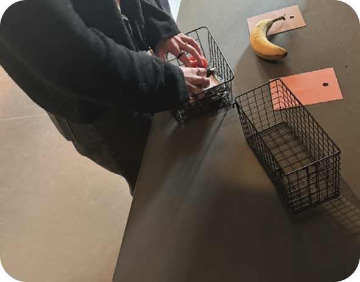
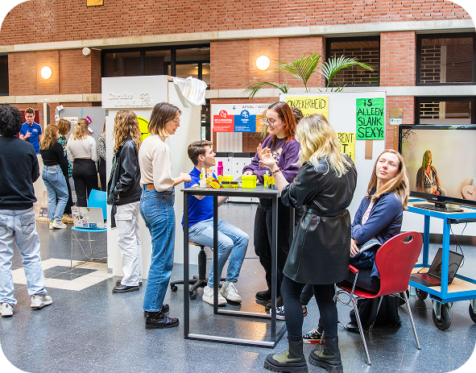
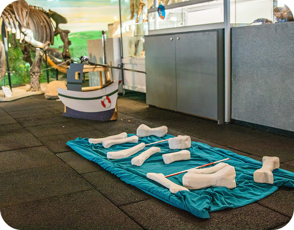

KLEM
KLEM is a campaign that raises awareness of neurodivergent students navigating a higher education system that was not designed with them in mind.
KLEM is a campaign that raises awareness of neurodivergent students navigating a higher education system that was not designed with them in mind.
Breaking Point is an interactive game that gives players insight into what it is like to live with burnout. By making energy levels, stress and everyday challenges tangible through play, it reveals the often invisible impact of burnout.


INs & OUTs is an educational quiz app designed to help young people learn about sex and sexuality in a playful and accessible way.

Together with a team of students, we redesigned the dark experience at muZIEum in Nijmegen. By creating a new narrative flow, we aimed to make the experience more connected and actively involve visitors through storytelling, interaction and a gradual build-up of tension.
Wij Zijn Teleurgesteld (We Are DisDisappointed) is a campaign that challenges the beauty industry and the unrealistic standards it promotes.


Blends With Benefits is a travelling pop-up store that offers tea lovers across the Netherlands a selection of delicious and unique flavours.

Together with a team of students, I designed an interactive museum experience for the Oertijdmuseum. The experience invites children and their parents to explore the world of the North Sea during the Pleistocene. Our concept combines physical activity throughout the museym with an supporting app.
I designed a dynamic visual identity for TEDx Delft’s Let’s Make event. I chose LEGO bricks as the foundation of the identity because their modular nature fit perfectly with the theme of Let's Make.